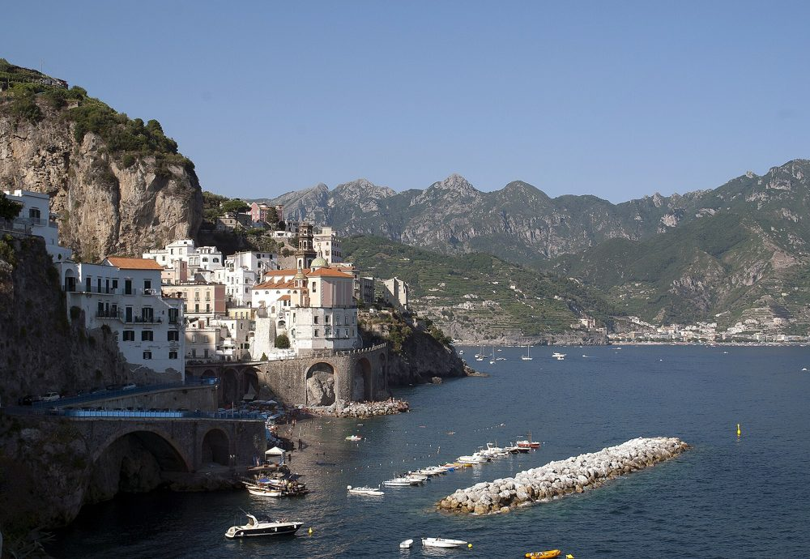
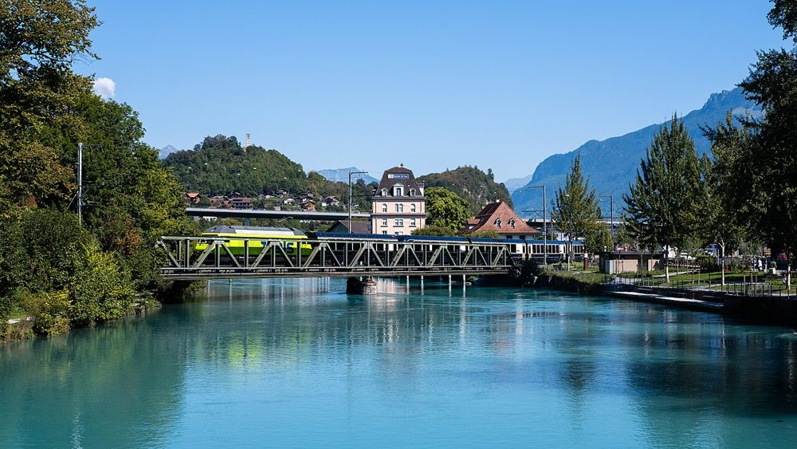
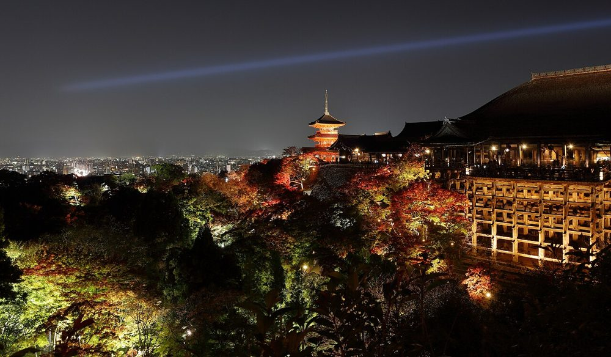
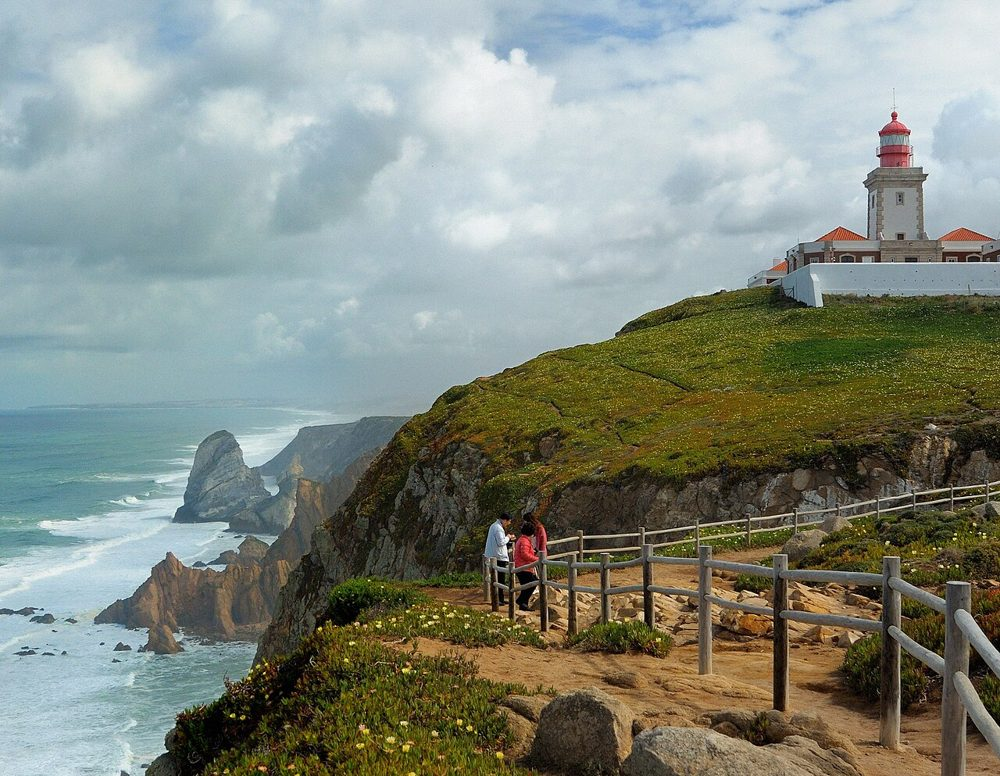
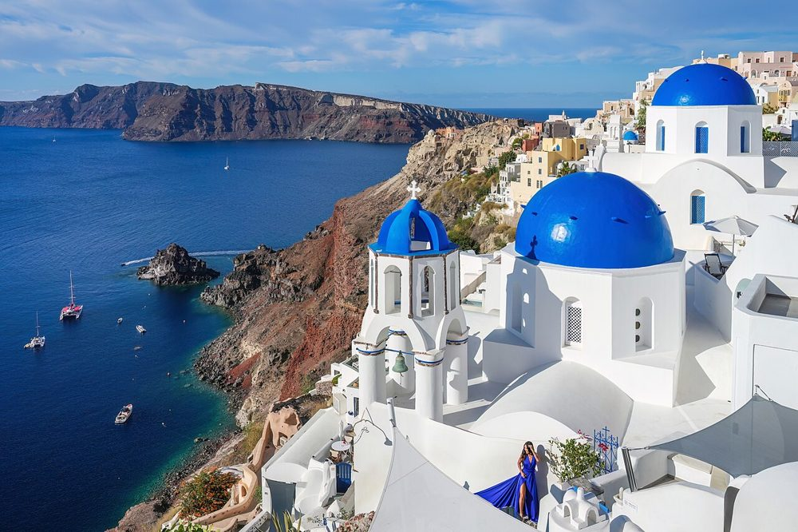
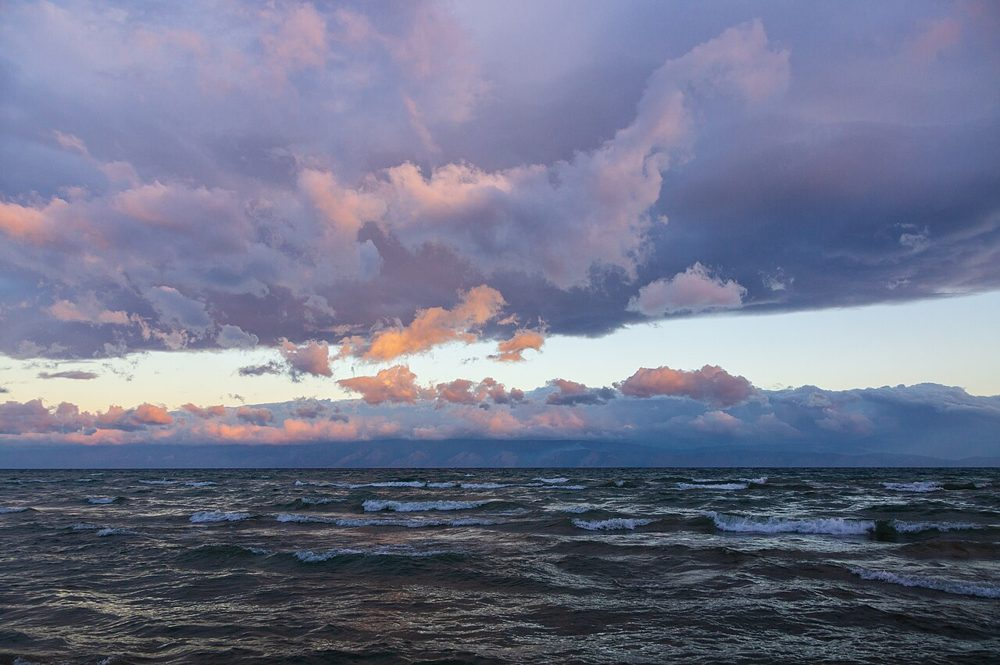
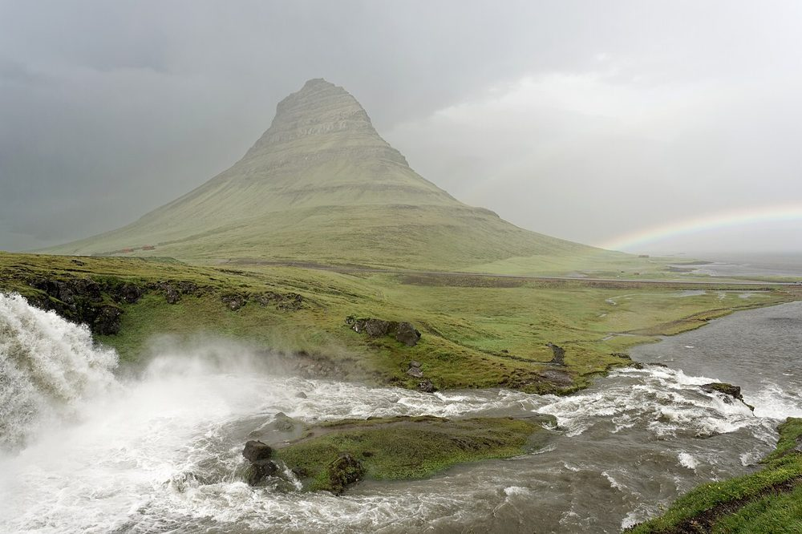

ИталияАмальфи
Жемчужина Средиземноморья
Живописный город на побережье Италии с узкими улочками, старинной архитектурой и потрясающими видами на море.
ПодробнееПутеводитель по красивым местам
Собрали места, которые выглядят на фотографиях так же хорошо, как и вживую. Наведите курсор на карточку — откроются подробности о поездке.

ИталияЖемчужина Средиземноморья
Живописный город на побережье Италии с узкими улочками, старинной архитектурой и потрясающими видами на море.
Подробнее
ШвейцарияГоры, озёра, приключения

ЯпонияКультура и традиции

ПортугалияКрай Европы

ГрецияОстров закатов

РоссияОзеро-легенда

ИсландияГора-шляпа у океана
Присылаем одну подборку направлений по пятницам, без спама.